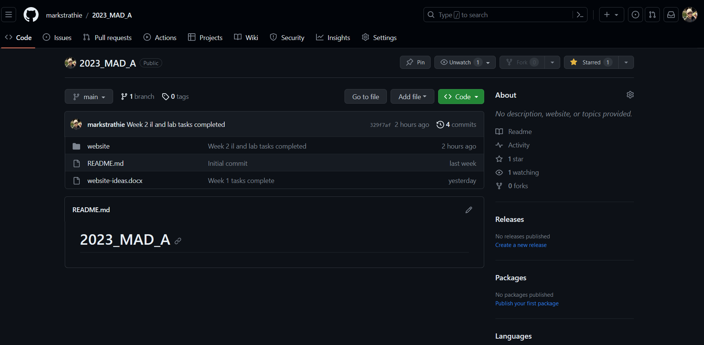

Week 3 - Establishing my narrative and using GitHub
IL Task 1 - Identify my key narrative points and create a plan
I read How to Use Storytelling in Web Design to help plan the narrative of my topic.
- Act 1 - opening scene: Showcasing the massive amount of data and the confusing options it entails.
- Act 2 - story development: Software used to help manage data, beginning to learn fundamental skills. Why you should.
- Act 3 - call to action: Introduction of AI to boost your skillset and step confidently into the future (introducing AI will be most complex area I think).
- Message: The website will deal with contemporary ideas to keep you at the forefront of the tech sector. It will be as usable as possible to maximise your productivity. It will create a way to gurantee future success by learning future-proof skills.
- Emotion: Confidence, bold, assertive. Thinking about your future and technology can be intimidating and you want to feel confident moving forward.
- Characters: Other students and young professionals starting their careers in the technology industry.
IL Task 2 - Incorporate my narrative plan into my portfolio
My plan is located above. I produced this following the guide on the website linked above, with reference to the hero's journey narrative structure talked about in our lectures. I will take a methodical approach to the narrative. As you can see from the image below, Data Science follows a hierarchy of steps. My Act 1 will need to deal with the abundance of data, the fact that this is increasing in the future, and how this creates career opportunities by helping businesses make data-driven solutions. Act 2 will consider the development of the story, where tools will be introduced to collect, store and transform data. This is where the user will learn software fundamentals and feel like they have gained one of their core values - productivity. Act 3, call to action, is where the data will be analysed to produce visualisations, and where AI will be introduced (the enemy/ordeal). The user will gain understanding of this new enemy and turn it into an ally.
IL Task 3 - Begin preparation for my project proposals submission
Here I reviewed the project proposal guide to prepare for my submission.

Lab Task 1 - Understanding web servers
Here I reviewed the 'What are web servers?' article to refresh my knowledge.
Lab Task 2 - Create a GitHub repository
I have already created a GitHub repo here.
Lab Task 3 - Create my website files
I have already started creating html files for my website. However now I created a basic stylesheet to begin thinking about the css of my website. I used W3Schools to help refresh my memory on CSS.
Lab Task 4 - Upload my website files to GitHub
I have already been uploading my work each week to GitHub using Git.
Lab Task 5 - Launch my website
My repository has already been created at the URL https://github.com/markstrathie/2023_MAD_A and here is what the website directory looks like:
Lab Task 6 - Managing my website
I submitted my GitHub repository URL on Moodle and I practised using Git by uploading all my previous coding coursework to my GitHub in new repositories. This was a good learning experience.